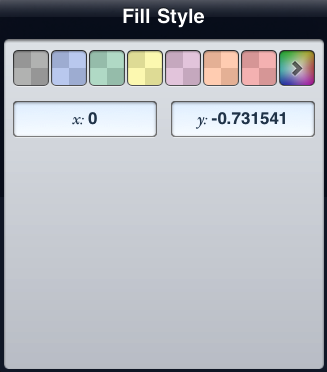

Making Changes to a Fill

Fills add a lot of pop to a graph and are a great way to visually communicate ideas. To make changes to a fill, tap the fill and press the Info button. The Fill Style popover appears with the following options:
Select a chit to change the fill color from the displayed palette or tap the rainbow chit on the right to see more color options. By default, the fill colors are at 50% opacity so that you can see beyond the fill, and on to any information that might be lurking below. If you’d like to change the opacity, tap the rainbow chit to see more color options, then choose the HSB or RGB buttons, and adjust the opacity at the bottom. (If you use the Gray button on the right, this changes your color as well and applies the grayscale palette.)
Change the fill coordinates to move the fill to a precise location on the graph. Tap in the cells and type an x or y coordinate to move the fill to the corresponding location. The x-coordinate applies to the point on the line that is closest to the x-origin, and the y-coordinate applies to the point closest to the y-origin. Unlike points on a line, the points connected to a fill do not adopt the applied coordinates even if they are selected.